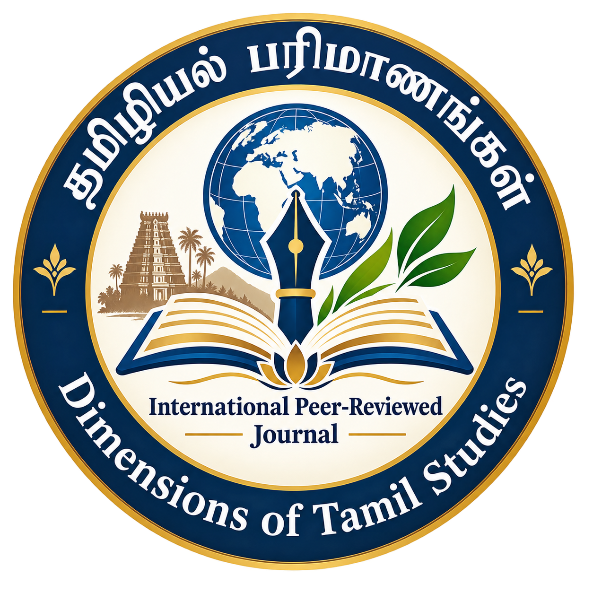

தமிழ் மொழி, இலக்கியம், பண்பாடு, வரலாறு மற்றும் தமிழியல் சார்ந்த பல்வேறு ஆய்வுத்துறைகளில் தரமான ஆய்வுகளை வெளியிடும் மதிப்பாய்வு செய்யப்பட்ட காலாண்டு மின்னிதழ்.
A peer-reviewed scholarly journal dedicated to research in Tamil language, literature, culture, history and related interdisciplinary fields.
ஆய்விதழின் சிறப்பம்சங்கள் மற்றும் முக்கியத் தகவல்கள்
காலாண்டிதழ்
ஆண்டிற்கு நான்கு இதழ்கள்
அறிஞர்களால் மதிப்பாய்வு செய்யப்படும் ஆய்விதழ்
வெளியிடப்பட்ட ஆய்வுகளுக்கான திறந்த அணுகல்
பன்னாட்டுப் பார்வையுடன் தமிழியல் ஆய்வுகள்
பன்முகத்துறை தமிழியல் ஆய்வுகளுக்கான தளம்
ISSN பெறும் நடைமுறை முன்னெடுக்கப்பட உள்ளது
நோக்கமும் ஆய்வெல்லையும்
“தமிழியல் பரிமாணங்கள்” இதழ் தமிழ் மொழி, இலக்கியம், பண்பாடு, வரலாறு மற்றும் தமிழியல் சார்ந்த பல்வேறு ஆய்வுத்துறைகளில் புதிய ஆய்வுச் சிந்தனைகளை ஊக்குவிப்பதை நோக்கமாகக் கொண்டுள்ளது.
தரமான ஆய்வுகளை வெளியிடுதல், ஆய்வாளர்களிடையே கல்வியியல் பரிமாற்றத்தை வளர்த்தல் மற்றும் தமிழியல் ஆய்வுகளை பன்னாட்டுக் கல்வியியல் சூழலுடன் இணைத்தல் ஆகியவை இதழின் முக்கிய நோக்கங்களாகும்.
ஆய்வுக்கான முக்கியப் பகுதிகள்
செவ்வியல் மற்றும் நவீன தமிழ் இலக்கியம்
மொழியியல் மற்றும் இலக்கணம்
வரலாறு மற்றும் பண்பாட்டு ஆய்வுகள்
தொல்லியல் மற்றும் கல்வெட்டியல்
நாட்டார் வழக்காற்றியல் மற்றும் பண்பாட்டியல்
ஒப்பிலக்கியம் மற்றும் இடைத்துறை ஆய்வுகள்
எங்களுடன் ஏன் ஆய்வை வெளியிட வேண்டும்?
சமர்ப்பிக்கப்படும் ஆய்வுகள் இதழின் மதிப்பாய்வு நடைமுறைக்கு உட்படுத்தப்படும்.
வெளியிடப்படும் ஆய்வுகளை வாசகர்கள் திறந்த அணுகலில் பயன்படுத்தும் வகையில் இதழ் செயல்படும்.
தமிழியல் ஆய்வுகளைப் பன்னாட்டுக் கல்வியியல் சூழலுடன் இணைக்கும் தளமாக இதழ் செயல்படுகிறது.
தமிழியல் தொடர்பான பல்வேறு இடைத்துறை மற்றும் பன்முகத்துறை ஆய்வுகளுக்கு வாய்ப்பு வழங்கப்படுகிறது.
ஆசிரியர் வழிகாட்டுதல்கள், மதிப்பாய்வு, வெளியீட்டு நெறிமுறைகள் போன்றவை தெளிவாக வழங்கப்படும்.
ஆய்வாளர்களின் தரமான ஆய்வுகளை கல்வியியல் வாசகர்களிடம் கொண்டு செல்லும் நோக்கத்துடன் இதழ் செயல்படுகிறது.
அட்டவணைப்படுத்தல் மற்றும் கல்விசார் தெரிவுநிலை
“தமிழியல் பரிமாணங்கள்” இதழ் தகுதி மற்றும் தேவையான நடைமுறைகள் பூர்த்தி செய்யப்படும் நிலையில் பொருத்தமான கல்விசார் தேடல் மற்றும் அட்டவணைப்படுத்தல் சேவைகளில் இடம்பெறுவதற்கான முயற்சிகளை மேற்கொள்ளும்.
The journal will pursue inclusion in appropriate scholarly discovery and indexing services as eligibility requirements and publication history permit.
ஆய்விதழ் விவரம்
இதழைப் பற்றி
“தமிழியல் பரிமாணங்கள்” (Dimensions of Tamil Studies) என்பது தமிழ் மொழி, இலக்கியம், பண்பாடு, வரலாறு மற்றும் தமிழியல் சார்ந்த பல்வேறு ஆய்வுத்துறைகளை ஒருங்கிணைக்கும் மதிப்பாய்வு செய்யப்பட்ட காலாண்டு மின்னிதழாகும்.
இவ்விதழ் புதிய ஆய்வுச் சிந்தனைகளை ஊக்குவித்தல், தரமான ஆய்வுகளை வெளியிடுதல் மற்றும் தமிழியல் ஆய்வாளர்களிடையே கல்வியியல் பரிமாற்றத்தை வளர்த்தல் ஆகியவற்றை நோக்கமாகக் கொண்டுள்ளது.
Dimensions of Tamil Studies is a peer-reviewed quarterly e-journal dedicated to scholarly research in Tamil language, literature, culture, history and related interdisciplinary fields.
The journal aims to encourage new research ideas, facilitate the publication of quality scholarly work, and promote academic exchange among researchers working in Tamil Studies.
உங்கள் ஆய்வுக் கட்டுரையை எங்கள் இதழுக்கு சமர்ப்பிக்க வரவேற்கிறோம்.
Researchers are invited to submit original scholarly manuscripts in accordance with the journal's Author Guidelines.
📧 t.geethanjalingmc@gmail.com